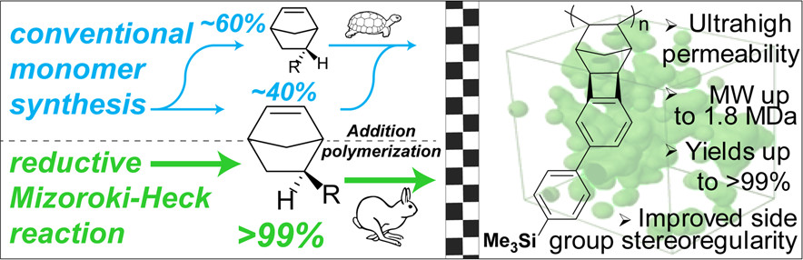
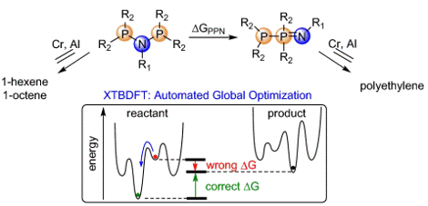
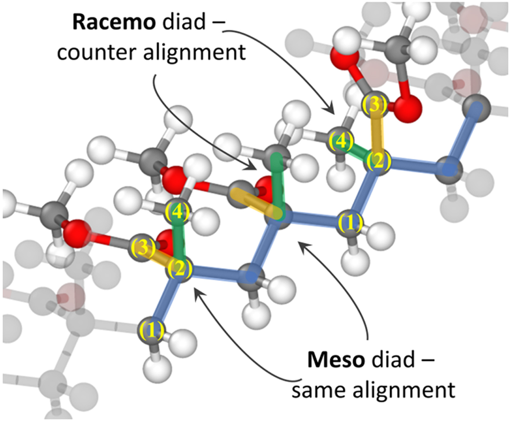
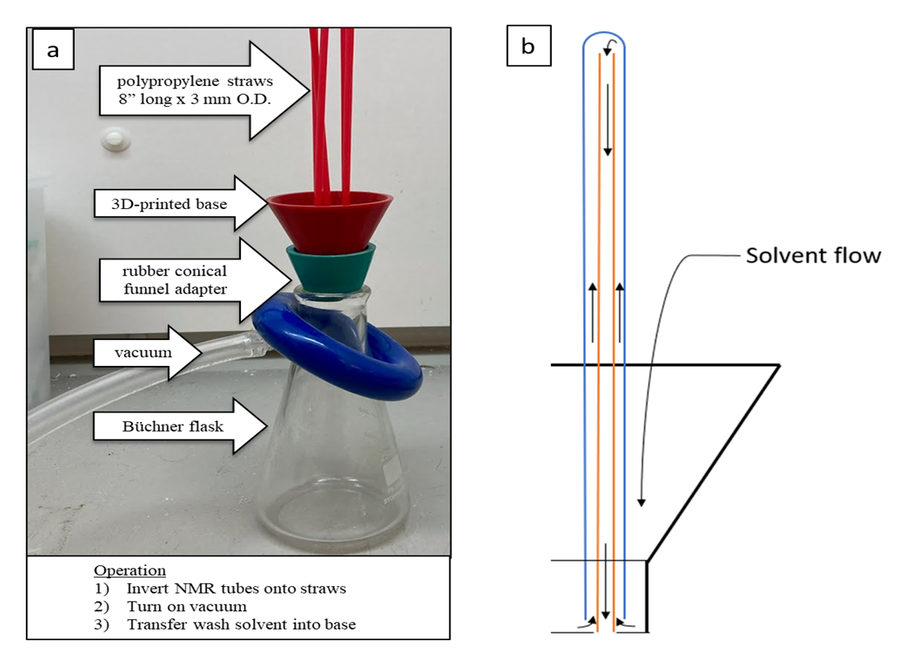
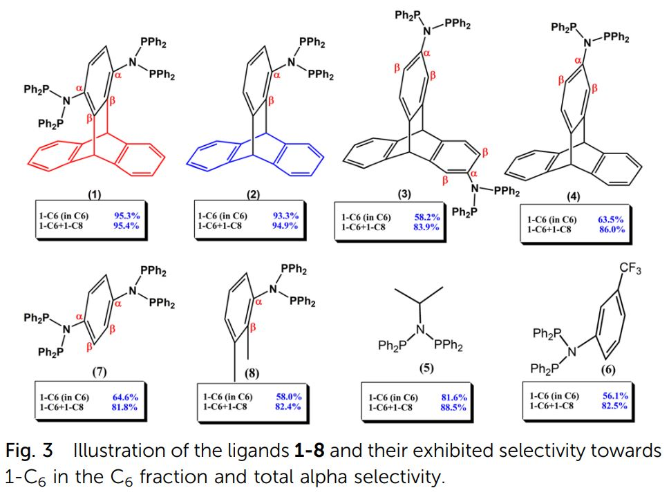
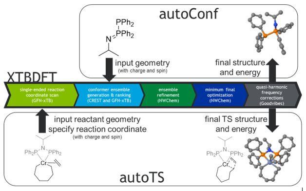
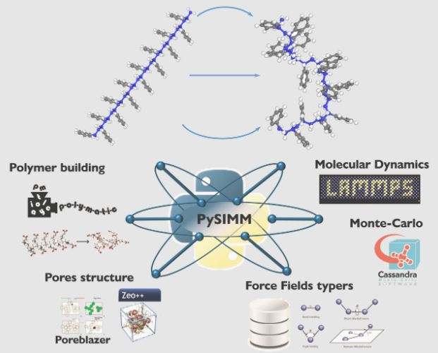

The reactions of a range of coordinatively unsaturated σ-organyl thiocarbonyl complexes with 1,4,7-trithiacyclononane ([9]aneS3) have been investigated, leading in some but not all cases to migratory insertive coupling of thiocarbonyl and σ-organyl ligands. Insights have been provided by a computational analysis of model compounds.
Mono- and bimetallic complexes of nickel supported by a terphenyl diphosphine have been synthesized. The reported complexes show diverse metal−arene interactions in the solid state. Reactions of an o,o′-biphenyldiyl dinickel complex with CO and dichloroalkanes lead to fluorene derivatives, indicating the formation of carbon−carbon bonds at a bimetallic moiety.
Nickel catalysts have been developed for a wide range of C-C bond formation reactions. Reaction mechanisms proposed for these transformations generally involve catalytic intermediates based on mononickel species. These reactions are reviewed and the possibility of dinickel species active in C-C cross-coupling chemistry is discussed.
Nickel hydrides supported by a terphenyl diphosphine were synthesized and found to undergo nickel-to-arene H-transfers. Some of the resulting complexes also undergo the reverse (C-to-Ni) H-migration, indicating the potential for storing H-equivalents in this type of pincer ligand. NMR spectroscopy, single crystal X-ray diffraction, and isotopic labeling studies investigating the mechanism of these processes are discussed.
A dinuclear nickel system supported by a tris(phosphinoaryl)benzene ligand shows unusual molecular dynamics with potential applications in molecular devices. Reversible Ni–Ni bond cleavage that induces 180° rotation around an aryl–aryl bond occurs in response to chloride addition. A dinickel moiety was found to rotate around the bridging arene by a mechanism proposed to involve breaking and forming Ni–P bonds. All the accessed dinickel compounds are stabilized by strong metal–arene interactions.
Mechanistic studies of the hydrogenolysis of aryl ethers by nickel were undertaken with (diphosphine)aryl methyl ethers. A Ni(0) complex containing Ni–arene interactions adjacent to the aryl–O bond was isolated. Heating led to aryl–O bond activation and generation of a nickel aryl methoxide complex. Formal β-H elimination from this species produced a nickel aryl hydride which can undergo reductive elimination in the presence of formaldehyde to generate a carbon monoxide adduct of Ni(0). The reported complexes map out a plausible mechanism of aryl ether hydrogenolysis catalyzed by nickel. Investigations of a previously reported catalytic system using isotopically labeled substrates are consistent with the mechanism proposed in the stoichiometric system, involving β-H elimination from a nickel alkoxide rather than cleavage of the Ni–O bond by H2.
A para-terphenyl diphosphine was employed to support a dipalladium(I) moiety. Unlike previously reported dipalladium(I) species, the present system provides a single molecular hemisphere for binding of ligands across two metal centers, enabling the characterization and comparison of the binding of a wide variety of saturated and unsaturated organic molecules. The dipalladium(I) terphenyl diphosphine toluene-capped complex was synthesized from a dipalladium(I) hexaacetonitrile precursor in the presence of toluene. The palladium centers display interactions with the π-systems of the central ring of the terphenyl unit and that of the toluene. Exchange of toluene for anisole, 1,3-butadiene, 1,3-cyclohexadiene, thiophenes, pyrroles, or furans resulted in well-defined π-bound complexes which were studied by crystallography, nuclear magnetic resonance (NMR) spectroscopy, and density functional theory. Structural characterization shows that the interactions of the dipalladium unit with the central arene of the diphosphine does not vary significantly in this series allowing for a systematic comparison of the binding of the incoming ligands to the dipalladium moiety. Several of the complexes exhibit rare μ–η2:η2 or μ–η2:η1(O or S) bridging motifs. Hydrogenation of the thiophene and benzothiophene adducts was demonstrated to proceed at room temperature. The relative binding strength of the neutral ligands was determined by competition experiments monitored by NMR spectroscopy. The relative equilibrium constants for ligand substitution span over 13 orders of magnitude. This represents the most comprehensive analysis to date of the relative binding of heterocycles and unsaturated ligands to bimetallic sites. Binding interactions were computationally studied with electrostatic potentials and molecular orbital analysis. Anionic ligands were also demonstrated to form π-bound complexes.
A series of π-bound Mo−quinonoid complexes supported by pendant phosphines have been synthesized. Structural characterization revealed strong metal–arene interactions between Mo and the π system of the quinonoid fragment. The Mo–catechol complex (2a) was found to react within minutes with 0.5 equiv of O2 to yield a Mo–quinone complex (3), H2O, and CO. Si- and B-protected Mo–catecholate complexes also react with O2 to yield 3 along with (R2SiO)n and (ArBO)3 byproducts, respectively. Formally, the Mo–catecholate fragment provides two electrons, while the elements bound to the catecholate moiety act as acceptors for the O2 oxygens. Unreactive by itself, the Mo–dimethyl catecholate analogue reduces O2 in the presence of added Lewis acid, B(C6F5)3, to generate a MoI species and a bis(borane)-supported peroxide dianion, [[(F5C6)3B]2O22–], demonstrating single-electron-transfer chemistry from Mo to the O2 moiety. The intramolecular combination of a molybdenum center, redox-active ligand, and Lewis acid reduces O2 with pendant acids weaker than B(C6F5)3. Overall, the π-bound catecholate moiety acts as a two-electron donor. A mechanism is proposed in which O2 is reduced through an initial one-electron transfer, coupled with transfer of the Lewis acidic moiety bound to the quinonoid oxygen atoms to the reduced O2 species.
A series of isostructural trinuclear complexes of metal composition Pd2Fe, Pd2Co, and Ni2Fe was synthesized in a stepwise fashion. Using dinuclear precursors (PdI2 and NiI2) supported by p-terphenyl diphosphine ligands allowed for the selective incorporation of a single additional metal center. The effects of both metal composition and ligand electronics on cluster properties were studied. These results highlight the importance of metal–metal interactions in mixed-metal sites of structurally analogous clusters.
Study of the kinetics of intramolecular aryl ether C−O bond cleavage by Ni was facilitated by access to a family of metal complexes supported by diphosphines with pendant aryl-methyl ethers. The nature of the aryl substituents was found to have little effect on the rate of cleavage. In contrast, soluble Lewis acidic additives accelerate the aryl ether cleavage dramatically. The effect of AlMe3 was studied in detail, and showed an increase in rate by several orders of magnitude. Low temperature NMR spectroscopy studies demonstrate quantitative coordination of ether to Al. From the Lewis acid-bound precursor, the activation parameters for ether cleavage are significantly lower. These findings provide a mechanistic basis for milder catalyst design for the activation of strong bonds.
A chemiresistive detector for carbon monoxide was created from single-walled carbon nanotubes (SWCNTs) by noncovalent modification with diiodo(η5:η1-1-[2-(N,N-dimethylamino)ethyl]-2,3,4,5-tetramethylcyclopentadienyl)-cobalt(III) ([Cp^CoI2]), an organocobalt complex with an intramolecular amino ligand coordinated to the metal center that is displaced upon CO binding. The unbound amino group can subsequently be transduced chemiresistively by the SWCNT network. The resulting device was shown to have a ppm-level limit of detection and unprecedented selectivity for CO gas among CNT-based chemiresistors. This work, the first molecular-level mechanistic elucidation for a CNT-based chemiresistive detector for CO, demonstrates the efficacy of using an analyte’s reactivity to produce another chemical moiety that is readily transduced as a strategy for the rational design of chemiresistive CNT-based detectors.
Carbon monoxide (CO) outcompetes oxygen when binding to the iron center of hemeproteins, leading to a reduction in blood oxygen level and acute poisoning. Harvesting the strong specific interaction between CO and the iron porphyrin provides a highly selective and customizable sensor. We report the development of chemiresistive sensors with voltage-activated sensitivity for the detection of CO comprising iron porphyrin and functionalized single walled carbon nanotubes (F-SWCNTs). Modulation of the gate voltage offers a predicted extra dimension for sensing. Specifically, the sensors show significant increase in sensitivity toward CO when negative gate voltage is applied. The dosimetric sensors are selective to ppm levels of CO and functional in air. UV-Vis spectroscopy, differential pulse voltammetry, and density functional theory reveal that the in situ reduction of FeIII to FeII enhances the interaction between the F-SWCNTs and CO.
Formic acid is corrosive, and a sensitive and selective sensor could be useful in industrial, medical, and environmental settings. We present a chemiresistor for detection of formic acid composed of single-walled carbon nanotubes (CNTs) and nickel bis(ortho-diiminosemiquinonate) (1), a planar metal complex that can act as a ditopic hydrogen-bonding selector. Formic acid is detected in concentrations as low as 83 ppb. The resistance of the material decreases on exposure to formic acid, but slightly increases on exposure to acetic acid. We propose that 1 assists in partial protonation of the CNT by formic acid, but the response toward acetic acid is dominated by inter-CNT swelling. This technology establishes CNT-based chemiresistive discrimination between formic and acetic acid vapors.
Investigations of magnetism in electronically coupled polyradicals have largely focused on applications in photonic and magnetic devices, wherein radical polymers were found to possess molecularly tunable and cooperative magnetic properties. Radical polymers with nonconjugated insulating backbones have been intensively investigated previously; however the integration of radical species into conducting polymer backbones is at an early stage. We report herein 1,3-bisdiphenylene-2-phenylallyl (BDPA)-based conjugated radical polymers that display ambipolar redox activities and conductivities. Moreover, these radical polymers were demonstrated to be promising magneto-optic (MO) materials with Faraday rotations wherein the sign is modulated by the radical character and display absolute Verdet constants up to (2.80 ± 0.84) × 104 deg T−1 m−1 at 532 nm. These values rival the performance of the present-day commercial inorganic MO materials (e.g., terbium gallium garnet, V = −1.0 × 104 deg T−1 m−1 at 532 nm). The structure property studies detailed herein reveal the promise of multifunctional conjugated radical polymers as responsive MO materials.
Carbon nanotubes (CNTs) promise to advance a number of real-world technologies. Of these applications, they are particularly attractive for uses in chemical sensors for environmental and health monitoring. However, chemical sensors based on CNTs are often lacking in selectivity, and the elucidation of their sensing mechanisms remains challenging. This review is a comprehensive description of the parameters that give rise to the sensing capabilities of CNT-based sensors and the application of CNT-based devices in chemical sensing. This review begins with the discussion of the sensing mechanisms in CNT-based devices, the chemical methods of CNT functionalization, architectures of sensors, performance parameters, and theoretical models used to describe CNT sensors. It then discusses the expansive applications of CNT-based sensors to multiple areas including environmental monitoring, food and agriculture applications, biological sensors, and national security. The discussion of each analyte focuses on the strategies used to impart selectivity and the molecular interactions between the selector and the analyte. Finally, the review concludes with a brief outlook over future developments in the field of chemical sensors and their prospects for commercialization.
A major challenge in the development of anion exchange membranes for fuel cells is the design and synthesis of highly stable (chemically and mechanically) conducting membranes. Membranes that can endure highly alkaline environments while rapidly transporting hydroxides are desired. Herein, we present a design using cross-linked polymer membranes containing ionic highways along charge-delocalized pyrazolium cations and homoconjugated triptycenes. These ionic highway membranes show improved performance. Specifically, a conductivity of 111.6 mS cm–1 at 80 °C was obtained with a low 7.9% water uptake and 0.91 mmol g–1 ion exchange capacity. In contrast to existing materials, ionic highways produce higher conductivities at reduced hydration and ionic exchange capacities. The membranes retain more than 75% of their initial conductivity after 30 days of an alkaline stability test. The formation of ionic highways for ion transport is confirmed by density functional theory and Monte Carlo studies. A single cell with platinum metal catalysts at 80 °C showed a high peak density of 0.73 W cm–2 (0.45 W cm–2 from a silver-based cathode) and stable performance throughout 400 h tests.
Efficient syntheses that incorporate thiophene units into different extended conjugation systems are of interest as a result of the prevalence of sulfur-rich aromatics in organic electronics. Self-organization by using liquid crystal properties is also desirable for optimal processing of organic electronics and optical devices. In this article, we describe a two-step process to access extended regioisomers of polyaromatics with different shapes. This method involves an efficient single or double benzannulation from an alkyne precursor followed by Scholl cyclization. In spite of their unconventional nondiscoid shape, these materials display stable columnar liquid crystal phases. We examine the photophysical and electrochemical properties and find that structurally very similar thiophene-fused polyaromatics display significant differences in their properties.
We report an anion-sensing platform wherein conductance changes are triggered by chemical interactions between selectors and anions. The selector design incorporates both a cationic moiety (i.e., pyridinium) and a thiourea-based dual-hydrogen-bond donor. Anion binding by a model selector (2) was studied using 1H NMR and UV–vis titrations, which reveal a binding strength toward acetate ions (AcO–) followed by Cl– > Br– > NO3–. These studies reveal that selector 2 is deprotonated upon addition of AcO–, whereas it undergoes hydrogen bonding associated with Cl–, Br–, and NO3–. The cationic pyridinium moiety improves anion binding affinity by lowering the pKa value of selector 2 and enhancing the hydrogen-bond donor capability as confirmed by spectroscopic titrations and DFT calculations. The selector is covalently attached to poly(4-vinylpyridine) (P4VP), which wraps single-walled carbon nanotubes (SWCNTs) (i.e., P4VP-2-SWCNT) to transduce an electrical signal. As a result, continuous anion sensing was achieved with high sensitivity represented by a normalized resistance change of 101.9 ± 10.3% toward 16.7 mM AcO–, whereas negligible sensitivity was observed toward Cl–, Br–, and NO3–. The sensitivity transition was attributed to the internal charge transfer of 2 by deprotonation of the thiourea proton upon addition of AcO–.
Next-generation membranes use highly engineered polymeric structures with enhanced chain rigidity, yet difficulties in polymerization often limit molecular weights required for film formation. Addition-type polynorbornenes are promising materials for industrial gas separations, but suffer from these limitations owing to endo−exo monomeric mixtures that restrict polymerization sites. In this work, a synthetic approach employing the reductive Mizoroki–Heck reaction resulted in exo-selective products that polymerized up to >99% yields for ROMP and addition-type polymers, achieving molecular weights an order of magnitude higher than addition-type polymers from endo−exo mixtures and impressive side group stereoregularity. Due to this increased macromolecular control, these polynorbornenes demonstrate unique solubility-selective permeation with mixed gas selectivities that exceed commercially used PDMS. In addition to thermal and structural characterization, XRD and computational studies confirmed the results of pure and mixed-gas transport testing, which show highly rigid membranes with favorably disrupted chain packing.
Simulation of conformationally complicated molecules requires multiple levels of theory to obtain accurate thermodynamics, requiring significant researcher time to implement. We automate this workflow using all open-source code (XTBDFT) and apply it toward a practical challenge: diphosphinoamine (PNP) ligands used for ethylene tetramerization catalysis may isomerize (with deleterious effects) to iminobisphosphines (PPNs), and a computational method to evaluate PNP ligand candidates would save significant experimental effort. We use XTBDFT to calculate the thermodynamic stability of a wide range of conformationally complex PNP ligands against isomeriation to PPN (ΔGPPN), and establish a strong correlation between ΔGPPN and catalyst performance. Finally, we apply our method to screen novel PNP candidates, saving significant time by ruling out candidates with non-trivial synthetic routes and poor expected catalytic performance.
This update of the pysimm application programming interface, pysimm 1.1, provides both infrastructural as well as functional updates. Moreover, improvements to the random walk application that allow it to construct polymers with controlled tacticity are highlighted. Additions to the forcefield module include an update to enable working with the family of CHARMM forcefields and automated typing with the CHARMM generalized forcefield (CGenFF). Finally, new detailed examples demonstrating new features are also provided.
Nuclear magnetic resonance (NMR) tubes can be cleaned with the proposed device, which can clean five tubes at the same time. It is comprised of a 3D-printed base, polypropylene straws, and a standard vacuum filtration flask assembly. The device is durable, easy to construct and operate, and resistant to common NMR solvents. In our experience, the cleaner saves time and solvent with no drop-off in cleaning efficiency compared to other models. The materials cost of this device is tabulated to be lower than commercially available NMR tube cleaners. The stereolithography and Solidworks files for this device are shared to allow for customization, for cleaning tubes of other dimensions.
Novel PNP ligands bearing an N-triptycene backbone were developed and evaluated for selective ethylene oligomerization. Upon activation with MMAO-3A, the pre-catalyst mixture containing Cr(acac)3/ligand efficiently promotes ethylene tetramerization with remarkably high productivities (up to 1733 kg gCr−1 h−1) and C8 olefin selectivities (up to 74.1 wt%). More importantly, ligands with a PNP moiety connecting at the 1- or 1,4-position of the triptycene molecule could achieve exceptionally high alpha (1-C6 + 1-C8) selectivities, exceeding 90 wt%, as a result of high 1-C6 purity (>90 wt%) in the C6 fraction. Based on comparative catalytic studies employing various PNP ligands with or without an N-triptycene backbone, we illustrate the fact that a rational design of PNP ligands with an optimum degree of steric profile around the N-center could provide C6 cyclics controlled highly α-selective ethylene oligomerization.
Recent developments have greatly increased accuracy, applicability, and accessibility of extended tight binding theory (XTB), allowing for rapid semi-empirical quantum mechanical calculations of molecular potential energy surfaces. For finer thermochemical accuracy, density functional theory (DFT) calculations are still required on stationary points. Such multi-level simulations present a steep learning curve, and trained researchers must spend significant time monitoring calculations and managing the workflow. Herein, we present XTBDFT, the first automated workflow between all freely licensed engines for XTB, DFT, and helper modules. In this version, the specific engines are GFN-XTB/CREST, NWChem, and GoodVibes, respectively. Example applications of this workflow is presented, finding the lowest energy conformer of a metal complex with multiple hindered degrees of internal rotation.
Pysimm is a framework for molecular simulations of polymers and polymer-based nanostructures, which enables their direct chemical synthesis and preparation. Pysimm facilitates the understanding of novel, amorphous, processable materials for a broad range of applications, including heterogeneous catalysts, adsorbents and gas storage materials, as well as protein-polymer conjugates. This tutorial provides a detailed guide on the construction of atomistic and united-atom models of polymers using Pysimm: an open-source Python Application Programming Interface for atomistic molecular simulations. The API complements and simplifies the work of widely known molecular simulation software, such as LAMMPS, CASSANDRA, NAMD and Amber. Readers should be familiar with the basic concepts of atomistic molecular simulations, as well as the basic knowledge of Python programming language, before attempting to follow this tutorial.
This work is separated into 3 main sections. First, the process of building an atomic-level model of a polymer chain from its repetitive units is described. The second section shows how to work with existing forcefields, and how Pysimm can automatically read, recognize, and assign appropriate Force Field parameters to a molecule. The final section discusses how to use Pysimm to construct polymer chains with pre-specified tacticity. The section is also available in the form of an interactive Jupyter notebook tutorial outlining simple guidelines to construct polymer models.
Natural gas accounts for 22% of the world’s energy consumption [1]; however, most of the current natural gas reservoirs are sour. Sour natural gas containing significant amounts of hydrogen sulfide (H2S) along with carbon dioxide (CO2) must be purified to meet the strict requirements for transportation and storage in the industry. Sour natural gas purification involves two steps: acid gas removal (AGR) and acid gas enrichment (AGE), which both are expensive using current highly energy intensive technologies. Membrane separation represents the most attractive technology to lower the purification cost and the carbon footprint in these large applications. Guided by density functional theory (DFT) calculations, we rationally designed a crosslinked poly(ethylene glycol) (PEG) membrane for AGR and AGE applications. Specifically, PEG-bisazide monomers were crosslinked with a novel trialkyne-functionalized H2S-philic melamine via azide-alkyne cycloaddition click chemistry. The developed membranes were characterized and tested for (H2S+CO2)/CH4 and H2S/CO2 separations under realistic industrial conditions, targeting the AGR and AGE applications, respectively. These novel membranes achieved high H2S permeability while maintaining attractive H2S/CO2 selectivity.